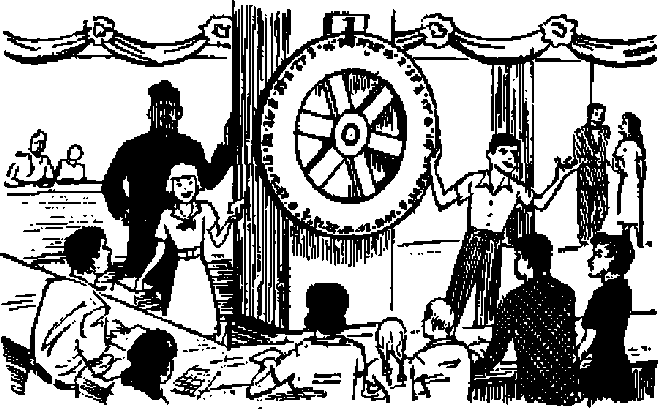

RELIGION’S MORAL FAILURE
Her failure to build faith Her ties with ijnpurity and vice
No Overcrowding in Paradise Earth
Room for resurrected dead and many more
”Fm a Self-made Animal!”
They may lose a limb, but they grow their own replacement!
Democracy in Action in Panama
News sources that are abl« to keep you awake to the vital issues of cur times must be unfettered by censorship and selfish interests. “AwakeI” has no fetters. It recognizes facts, faces facts, Is free to publish facts. It is not bound by political ambitions er obligations; it is unhampered by advertisers whose toes must not be trodden on; it is unprejudiced by traditional creeds. This journal keeps itself free that it may speak freely to you. But it does not abuse its freedom. It maintains integrity to truth.
“Awake!” uses the regular news channels, but is not dependent on them. Its own correspondents are on all continent*) in scores of nations. From the four corners of the earth their uncensored, on-the*scenes reports come to you through these columns. This journal s viewpoint is not narrow, but is international. It is read in many nations, in many languages, by persons of all ages. Through its pages many fields of knowledge pass in review—government, commerce, religion, history, geography, science, social conditions, natural wonders—why, it* coverage is as broad as the earth and as high as the heavens.
“Awake!" pledges itself to righteous principles, to exposing hidden foes and subtle dangers, to championing freedom for all, to comforting mourners and strengthening those disheartened by the failures of a delinquent world, reflecting sure hope for the establishment of a righteous New World.
Get acquainted with “Awake!" Keep awake by reading "Awake!"
Published Semimonthly By WATCHTOWER BIBLE AND TRACT SOCIETY, INC.
117 A da mu Street
N. H. KHobB, President
Printing thl» l»ue: 870,000
Untiigti It which tills maiulo* h Mhliihri: {tomlfflonthly—Afrilmns, English. Finnish, Germcn, Ntrwtjflan, Spanish Monthly—Danish, Free ell, □reek, rtntmiKse, ftwedisb, Vktainian.
Offices Yearly subscription Kate
Amtrlit, U.S., 117 Adans St, Brooklyn 1, N.Y. fl
Australia, 11 Beresford Bd.. StrUMcld, N-S.W. Ss Canada. 40 Irwin Are., Toronto 5, Ontario *1 Eaifond. 34 Craven Terrace, London, W. 2 7s Seitft Africa, 623 Boston Hom, Cape Town 7s
Entered as secrnd’Olass matter at Brooklyn, N. Y.
Brooklyn 1, N. U, S. A, Grant Bunka, fitocretory
Five e«nta copy
Hiflilttanccs should bt sent tn office in your country in wmpUimce with reguliiJons to guarantor safe deJivriy of money. Remittances are acceptor! at Brooklyn from countries where no office to located, by International money order only. SirtHcriptfon rates in different countries are here ata ted in local twenty. Notice of ixflrattai (with renewal blank) to Eent at least two issues ijefote subscription ei* pirts. Ghup of addrm when eenl to our office may be tkpectod effective within one month, Send your old at well as new Address.
Act of March 3, 1379. Printed in 0. S. A
Liberty Meets Another Challenge
Religion’s Moral Failure (Part One)
Religion’s Moral Failure (Part Two) 8
No Overcrowding in Paradise Earth
Ah, but Would They Not Starve?
"All Things New” in Paradise Earth 15
"Your Word Is Truth”
Clergy and Laity, a Scriptural
Volume XXXII
arookJyn, N, ¥., September SF 1951
Number 17
liberty meets another challenge
AT SEVEN o’clock on the evening of June 27, 1951, Jehovah’s witnesses and interested strangers assembled to hear an advertised Bible lecture in the tranquil surroundings of the Rochester, New Hampshire, common. When the lecture “Will East Meet West in Peace?” was about ten minutes underway, the peaceful setting was suddenly transformed from a typical American scene to one that incited thought of a typical “iron curtain” country.
A rabble mob formed, including the just-replaced local head of the American Legion, and led by two Catholic priests. The hoodlums induced a youth to open a barrage of firecrackers, which they followed with the incessant pounding of a large steel drum and tin cans. The police were called. Officers told the hiob to be quiet, but no results came until one of the priests told them they could continue talking but to cease the pounding. Despite continued annoyance and threats by the nazi-fied mob, no arrests were made by police.
As usual, the delinquency on the part of law enforcement officials was traced to their superiors. The following day, June 28, the local representative in charge of the activities of Jehovah’s witnesses, Mr. Walter A. Reid, visited the mayor and chief of police. Rather than co-operate with him to insure his safety during another lecture scheduled for the following Wednesday evening, July 4 (which had earlier been approved by both of these officials), the mayor now forbade the lecture to be given. Both he and the chief flatly refused to cooperate with Mr. Reid in bringing the ringleaders of the mob to justice. Moreover, the mayor threatened Mr. Reid with arrest if he appeared on the common to deliver the July 4 talk.
However, Jehovah’s witnesses, in the interests of freedom and the public’s right to hear the advertised Bible lecture, refused to cave in to intolerance. Mr. Reid made formal notification that the talk would go on, and a local paper, Foster’s Daily Democrat, honestly presented his full account of the priest-led mob’s attack on free worship. Reid made a request for protection during the next talk, and, in the teeth of the mayor’s threats, went to the state officials to notify them of the local authorities’ contempt for his rights. Attention was called to the fact that the federal government can prosecute a public official who willfully deprives a private citizen of his rights.
In contrast to the local mayor and* chief of police, the state leaders were much better versed in the law, in the principles of freedom and in common courtesy. When the local Rochester officials were next visited—what a change! Though with a beaten demeanor, they provided full protection for the July 4 lecture, which was carried off without incident. Potential an-noyers were cut short by police who this time performed their duty flawlessly.
SEPTEMBER 8, 1951
RELIGION'S rM°«Al
Al£^R£
Fart One: The Failure to Build Faith
jtiTN A city where the moral temperature ' Lof the citizenry is high,” said a New (York clergyman in February, “there is not likely to be a scandal in the Police departement, the Fire department, the educational! \ system and the college institutions all at ■the same time. . . . These are symptom^ I of fundamental rottenness. This is possible (only when the moral temper of the whole 'community is sufficiently low that it can
tolerate such things.”1
ThisTjlergyman decried the religious laxity of New York’s population and said that less than 3,500,000 New Yorkers are “even known by the religious institutions of our city”. However, if this more than 3 million persons had gotten sufficient faith and knowledge from New York’s churches they could do a great deal toward warming up the morals of the city’s more than 7.5 million population.
One writer said, “Something has gone wrong with the world. . . . That something which has gone wrong, in the opinion of many, is the disintegration of . . . the forces of religion and ethics.”2 Many persons are looking for a rejuvenation of religion’s moral forces and expect organized religion to take over and bring the world out of the mess it is in today. Others have little faith in it. From the religious side we frequently hear the claim that religion is the moral force needed today. Note this sampling of the promises for it:
* Christian education and relief is the answer to the challenge of the world situation.’'1 “The greatest responsibility for the reconstruction of society and the shattered world rests with the church and with a renewal of life in the churches.”4 “Judaism’s major contribution to the defense of the United States lies in strengthening the moral fiber of its citizens.”5 “It is the churches to which we must look to develop the resources for the great moral offensive that is required to make human rights secure and to win a just and lasting peace.”0 “As guides to aid the individual in the fight for lasting peace . .. increased church attendance. Individual and assemblage prayer. Conformity to religious duties.”' Also, we hear that “the churches can promote ... a world-wide sense of right and wrong, and an alertness to apply intelligent moral judgments to the conduct of nations”/ and that the churches will help hold the nation together/’ guide the world to goodness,10 and provide the morality that is the world’s sole hope.11
The claims are many, yet moral delinquency continues to worsen. Its very existence shows that religion has not succeeded in its avowed purpose to teach the Bible’s true moral principles, Religious leaders have preached so much about politics, economics and international relations that they have had little time and often less inclination to preach God’s Word. The people do not know the Bible, they have no real moral standard, and the world is in chaos.
' It is this failure on the part of the churches themselves that has brought on the conditions described by a Connecticut clergyman in a 1949 magazine article.12 He explained that the church, itfe£lf a landlord, could not go all out against slum conditions; itself a race discriminator, could not go all out against race discrimination. He said it “cannot go all out against war, because despite its theoretical supranationalist character, it is tied too closely to the political, economic and ideological shibboleths that lead to war. This is just another way of saying that the church ... is too enamored of the power and glory of this world. This condition was not true of the church of the first three centuries; it is true of the church today, and it is tragic. - . . We have made a mess of telling the world about God. The mess the world is in is eloquent testimony to our failure”.
Clergymen frequently say that modern cities are, like the ancient city of Sodom, “fundamentally rotten to the core.” But this rottenness today is not in Sodom. It is in nations claiming to be “Christian”, having a wealth of churches and a,back-ground of nearly 2,000 years of claimed “Christianity” in which to cast off corruption. As it has not done this, it betrays its lack of true Christianity.
One reason these conditions exist is that many of the clergy do not believe God’s Word themselves. They subtly refer to the Bible as “the world’s greatest literature”, and gloss over their unbelief of the ransom by talking about the “fatherhood of God and the brotherhood of man”. The words sound good and the congregation thinks it is learning the truth, but actually is. being fed on substitutes for the bread of life and shows the symptoms of spiritual starvation, sickness and death. The only thing that will rejuvenate them is a true knowledge of God’s Word, but the clergy do not teach it. One clergyman authoritatively said, “An entire genera- • tion or more has grown up, even within the churches, wh6 have never heard the true Christian gospel.”15
This ignorance of the Bible was likewise deplored by Dr. William A. Orton, professor at Smith College, who declared that the current generation is spiritually illiterate and lacking in even the rudiments of theological knowledge. He said, “The student today has not read the Bible and cannot understand any references or allusions to the Bible.”11
The lack of knowledge was further shown by Hampton M. Jarrell, professor of English at Winthrop College (South Carolina), who wrote the article “Sunday Schools Don’t Teach”, in the December, 1950, Atlantic Monthly. In it he said, “Are our young people getting such a foundation for their faith in knowledge and reason? T don’t think so. In fact, I fear that all but a few are getting no foundation at all, but only vague attitudes and allegiances. . . . They aren’t learning because nobody is teaching them. . . . Here’s where I start stepping on toes. . . . The job seems to be up to the church. Well, why not? That is what the church is for —or is it?” Most of the remainder of the article, as well as what had gone before, was devoted to showing the religious illiteracy of modern-day churchgoers. He quoted one of his students as saying, 'tut makes me mad as fire when I think of the time I spent going to Sunday school and then realize how
gion.” He commented, “She expressed the attitude of many students/’ and, “The church is not giving its young people an adequate intellectual foundation for religious thinking?’
This failure of modem religions to teach the Bible is a moral failure on religion’s part, for “moral” means, “Of or pertaining to the practices, conduct, and spirit of men toward God, themselves and their fellow men with reference to right and wrong and obligation to duty.”1*
Frankly acknowledging this moral failure of American Protestantism to faithfully practice the basic principles of Christianity, the National Congress of Home Missions (Protestant) said in Columbus, Ohio, January 27, 1950, “We are constrained in deep humility to confess that as individuals and as churches we have fallen far short of the teachings of our Lord. We have often succumbed to the secular spirit of the age and to divisions, classes, parties and distinctions that are foreign to the purposes of Jesus Christ and the example of the early church.”:c
Dr. Andrew V. Clements, dean of the Albany, New York, Law School, told a congregation that “man needs more from the church than ceremonial pomp”, and said, “We are living in a universe of poisoned attitudes, people against people, class against class. I maintain these attitudes are publicly maintained because of a voiceless church.”17 Dr. Merlyn A. Chappel of the Board of National Missions of the Presbyterian Church in the U. S. A. said, “Nominal Christianity ... is too anemic today to stand up before a lusty, new materialistic paganism.”1* Dr. W. L. Pettin-gill, of New York, told his congregation, “Religious teaching that is dished out now is a curse and not a blessing. Most of it is false religion which ignores the teachings of Christ. These false beliefs called religion are our greatest enemies.”16 The Vancouver (Canada) December 19,1949, reported that today people seek a “comforting” religion, a “watered down” gospel of Christ, and quoted a local clergyman as saying, “ ‘The very nickname of Christian was given [the early believers] because in their lives their neighbors could see the resemblance to Christ’s? But today, he said, the followers of the faith are easygoing, indifferent; seeking a comfortable brand of religion.”
A report to the Church of England by its moral welfare council in 1950 went so far as to express the opinion that today religion is so weak that instead of dictating the sexual code it is now to be dictated to by it It reported, “In a Society where, as in ours, religion has ceased to be the driving force, it is inevitable that sex should take its place.”20
The-example set by the churches themselves is not a good one. We are living in days when there is much ado about bribery scandals involving sports, law enforcement and high government officials. But are the politicians who accept bribes from criminals any worse than clergymen who accept salary bribes from their congregations to preach what tickles the people’s ear instead of the truth? Are they honest with themselves? With their congregations? If they were really Christian they would follow God’s Word, not the public’s whim. The Bible presents the right course. It teaches God’s instructions on marriage, divorce, human relations, honesty, trustworthiness. Religion claims to believe the Bible, but the clergy cannot preach too strongly against the world's immorality, for fear of losing their congregations who are guilty of the very things the Bible condemns. Where Protestant clergy
may condone loose divorce, the Catholic attitude is loose toward public criminals. (See following article.) Both are wrong. The churches themselves have been drawn under by the moral collapse, and contribute to the moral depravity, rather than eliminate it.
Pure worship has never been popular, Christ did not democratically preach what the majority wanted; he could not be bribed to do so, but he had a vital, though unpopular, message concerning the Kingdom. True Christians are preaching the same today, Christ called the men-pleasing, bribe-accepting religious leaders of his day a generation of vipers, whited sepulchers that looked clean on the outside, but inside were full of dead men’s bones! (Matthew 23) When the clergy cast aside belief in the Bible’s divine inspiration, its moral principles and other doctrines, is their teaching of much more value than that of a pagan witch doctor—who admittedly knows nothing of the Bible, but visits the sick, is a social figurehead, and can pronounce a “blessing” on certain public assemblages?
J. Allison Smith (pastor of Roxbury Methodist Church in Stamford, Connecti-id in his article referred to, a average community,
ve,»
fact that nobody gives a damn what the preacher says. He is not an authority on anything, and such status as he has is that of a civil servant. He has a ceremonial function in the community as a mar ri er, baptizer, funeral orator, and the pronounc-er of invocations and benedictions at public functions. These are but vestigia] remnants of a prehistoric age of faith?
*^R8ay's clergy coritftlUe be bribed by the salary the public pays, to preach to the tune the public demands. In wartime they are called on by the “tribal kings” of both sides, and ciergv of the same religion "bless" both armies who atom-bomb and poison-gas each other and indiscriminately bomb civilian populations, killing millions of innocent persons. Chaplains go along with the armies to help the conscience-stricken soldiers calm their mental anguish over the deeds they are ordered to commit Hypocrisy is evident in every nation. The clergy are well aware of it (as are all informed persons), but regularly they “bless” this national hypocrisy and pray that it will prosper over that of another nation which is likewise bung "blessed” by leaders of the same religion in the other land. Christ did not*take sides with or against the Roman Empire or other nations of his day. In doing so today are the clergy above the level of the witch doctors who speak empty words beseech-mg pagan gods to give their tribes victory over another tribe?
Religion has failed to be the moral force to solve the world's ills. Recognizing that failure, few people wholeheartedly support religion today. Time magazine, July 19, 1948, quoted Basil Kingsley Martin, editor of Britain's weekly New Statesman and Nation, as saying, “People are more interested in problems that we used to call religious than ever before, but the reason why they don’t go to church is that they don’t believe what is taught there.”
Many persons, thinking what today’s religions are doing represents the Bible, have rejected it too. In doing so they err. You do not quit eating because you do not like your grocer, but you search for a better one. Do not reject proper spiritual food just because it has been mishandled by those who claim to be its sole distributors. Today’s religions have failed to teach the Bible, but through studying it you will learn the truth. The proverb wisely says, “The curse of the Lord is in the house of the wicked: but he blesseth the habitation of the just” (Proverbs 3:33) Reject these leaders who have morally failed to teach God’s Word. Come out of the house of the wicked. Study your Bible, and join with those who are blessed in the house of the righteous.
quotation sources
[Unless given in article, the name of person whose statement Is being reported precedes the name of the news source.]
1, Ira W. Langston, New York Times, February 26, 1951.
2. The Rediscovery of Morals, by Henry C. Link, 3. ShSlord' P. Morehouse, New York Times, February 27, 1950.
4. Dr. Harry Emerson Fosdlek, New York TimesJ December 3, 1945.
5. R&W Jacob E. Segal (of Detroit), New York Times, May 6, 1951.
6. Senator John Foster Dulles, JSelt^ious Netes Service, August 29, 1949.
7, James M, Gillis (editor the Catholic Worirf), Scranton (Pa.) Times, May 28, 1948, '
8, U, N. delegate John Foster Dulles, New York l7"fi thjs-p Arbril IQwlQ
9. President Truman, New York Times, April 4, 1951.
10. Methodist Bishop Charles C, Selerman, Now York Times, December 10, 1945.
11. Dr. Randolph Ray, New York Times, April 2, 1951.
12. “Have We Ministers Failed”, Tomorrow magazine, May. 1949.
13. Canon Wedel (of Washington), Christian Century, March 19, 1947.
14, New York Times, November 21, 1946,
15, Funk and Wago alls New Standard Dictionary, page 1610.
16. New York Times, January 28, 1950.
1". New York Times, February 28, 1949.
18. Religious News Service, July 14, 1949,
19. New York Times, October 10, 1949.
20, Buffalo (N. Y.) Courier Express, October 28, 1950,
HEUGHIKS
Fart Two: Religion’s Connection with Wide-Scale Impurity, Vice and Moral Rot
WHEN the Kefauver crime investigating committee publicized the corrupt tie-up between big-time crime and law cm forcement officials, the nation was shocked. Religious leaders cried out in indignation at the conditions that were exposed, and the general impression was left with many । persons that religion would be a strong] force in improving conditions.
Protestants and Catholics alike talk loudly about moral standards. They do much in small things, but often completely ignore the more serious things. Each group can see where the other has failed, but neither Protestants nor Catholics have upheld proper moral standards nor fulfilled the high calling for which they claim to be specifically designated.
Our aim here is not to discredit any particular religion, but to present the facts concerning religion’s morals for those who want the truth. The facts are serious, worthy of your careful consideration, and can be checked by the references on page eleven.
Today crime is a major subject for discussion. Have Protestants or Catholics, with all their talk, succeeded in stopping it? Edward Westcrmarck, formerly of the University of London, wrote in his book
“It has also been noticed that a high de-greo of religious devotion is frequently accompanied by a great laxity of morals.” He cited authorities to show that often < “those Moslems who attended to their prayers most regularly were the greatest scoundrels”, and that, “among two hundred Italian murderers Ferri did not find fljy? who was irreligious; and Naples, which has
European city for crimes against the person, is also the most religious city in Europe,” and that “it seems extremely rare to find intelligently irreligious men in prison”. He quoted anothef author as reporting, “The more regular a vicious man has been in observing the commandments of the church, the more he feels in his heart that he can dispense with the observance of that celestial morality to which he ought to sacrifice his depraved propensities.” He added simply, “And how many a Protestant does not imagine that by going to church on Sundays he may sin more freely on the six days between?”
Religion itself has let the bars down on certain moral lines. The protests were loud and long in Milwaukee in August, 1947, when wide-open religious gambling snubbed the law at the golden jubilee picnic of the Holy Redeemer Catholic church and when another gambling casino was in operation at the Little Flower Roman Catholic church. Girls ran the illegal games. Little children learned ways that could eventually lead them ^efore future Kefauver committees. The priest said the police "tolerate” this illegal gambling "for the church”. When asked about the children picking up bad habits he said: "Of course not, my son. These few pennies, it's just like they were playing in their own homes.” (The "few pennies” amounted to a $1,500 "take” for the church.)1
Religious gambling is a big project. A 5,000-man bingo party was set up in the streets near Pittsburgh on Labor day, 1948. Criminal complaints have been filed against priests in various places.2 A 1949 election issue in New Jersey revolved around the Roman Church's fervent desire to keep up its income from gambling losses and to project the bingo issue into the gubernatorial campaign.
Church gambling is not a small-time enterprise to be ignored. Few realize its broad scope. A few years ago Life magazine reported that more Americans risk money in church lotteries tnan in any other form of gambling.3 Whether .gambling is immoral is a question long debated, but whatever the answer, in most of the U. S. it is illegal, and as long as it is illegal it will be preyed upon by a vulturous underworld and all sorts of crime will revolve around it. By encouraging it the churches will be aiding the underworld. If the churches were sufficiently moral in their behavior they would withdraw this assistance from these most vicious opponents of law and order. If religion were held sufficiently in respect by its parishioners, then it would not have to stoop to such questionable methods to extract sufficient money from its members to meet its needs.
Even more objectionable, though, is the practice of honoring crooks and holding gunmen up as heroes, letting poverty-stricken slum children of crime-ihfested big cities witness grand, elegant religious funerals for the underworld's top bosses. In doing so the churches are not proving to youth that "crime does not pay”. Rather they are implying to those who live In the very incubators of delinquency that they should hatch out into full-fledged crime careers if they want to get anywhere, and the church will cover all.
When Al Capone, who rocketed through the prohibition era to the clatter of a machine-gun barrage, died, in 1947, the mention of his Catholic priest’s presence was widely publicized? When Kansas
City’s notorious political boss, Tom Pendergast, died in 1947 he was praised by Msgr, Thomas B. McDonald, who said, “I can vouch for the fact that he was at church every morning at 7:30 for a period of 30 years.”6 In.1950 when Kansas City’s notorious gunman, Charles Binaggio, whom the underworld forces hoped would make that city a “wide open town”, was shot to death by underworld cronies, the “slightest circumstance” that got him a big church funeral was the fact that “recently he was seen receiving the sacraments and attending Sunday mass”.6-7 On the same day a requiem mass was celebrated for Charles Gargotta, Binaggio’s gunman, who was slain with him.
Hie Denver Catholic Registerf October 27, 1946, went out of its way to put other noted criminals up as good Catholics, trying to prove that Frank and Jesse James "were always good Catholics”. What does it take to make a good Catholic?
The May 2 Christian Century said, "Last week a notorious gangster . . . was buried from a Roman Catholic church in Brooklyn. . . . The gangsters who formerly attended such funerals were absent, thanks to the Kefauver committee’s activities. . . . The mantle of respectability. . . was thrown over this wicked life by the church. Who can estimate the influence on Brooklyn boys when church and society make such a display out of a typical gangster’s funeral? When ‘respectable* elements combine to glamorize the despoilers and parasites, who can blame the children if they elect to follow the hoodlums’ example?”
Yet, does not this church set a high moral standard? Oh yes! It has threatened excommunication to parents who let girls enter beauty contests,6 banned pin-up girl calendars in Quebec,9 and keeps a close watch on movie morals. A man’s daughter can appear in a beauty contest and he is excommunicated, but murderers and gangland leaders can still be good Catholics’ Something is out of balance in that kind of morals. Something is wrpng somewhere.
Protesfante, Too
But the blame does not rest on just one church. Take a look at Protestantism. Regarding Protestant religious morals and the crime scandals the May 2 Christian Century said, "While it cannot be denied that public morality could not have fallen so low if members of Protestant churches had done their duty, there are wholesome signs of an awakening.” They are getting on the band wagon after Kefauver started the music and the parade is under way. If these churches were the moral force that they claim to be then Kefauver could have gotten on their band wagon, not they on his.
Said the same publication last October 18, "The corruption revealed by the Kefauver committee could not have spread across the nation if the churches had done their full duty.” The Federal Council of Churches, in its message for World Order Day, October 23, 1949, said the world faced "basically a spiritual and moral crisis”.10 Despite the hundreds of thousands of churches with their vast membership rolls in all lands, conditions of immorality continue to worsen. Obviously they have not overcome the "spiritual and moral crisis” that the world faces. With all its loud talk religion has not succeeded in bringing about really moral conditions. Rather, by all-too-frequent silence or compromise it has even contributed to the moral breakdown. A letter from a reader of Time magazine (published in the January 27, 1947, issue) put the matter this way: "As soon as many leading churchmen wavered, let down, hemmed, hawed, compromised, beat about the bush about adultery, and remarriage of adulterers and adulteresses, contrary to Holy Writ, the secular, more appropriately called the pagan press, let lodse with all caliber guns. ... Millions in America are honeycombed with impurity, vice, adultery and moral rot. When they read popular books and magazines that sanction this ... they feel less guilty about their own sins."
If religion is to reform public attitudes, then it first will have to reform itself. Brooklyn’s notorious Harry Gross, who had a $100 million bookie empire and admitted he paid a million dollars a year to the police for protection, refused to name the corrupt cops. “Some of them have sons about to enter the priesthood. What are you asking me to do?”n How could reli-gion sincerely speak out against such practices when this most notorious of bookies identifies the parents of future religious leaders as the very ones the investigators are looking for? Further showing religion's moral failure, and its blame for conditions, Drew Pearson quoted J. Edgar Hoover as saying, “People commit crimes because of the disastrous decay of religion, faith and hope.”1-
Such conditions are frequently blamed on the other fellow. Protestants point to Catholic gambling enterprises, Catholics accuse Protestants of loose marriage morals; but both are in the wrong. The London Catholic Herald, February 9, reported, “ 'Outside the Church, particularly/ [someone else, not us] said Archbishop McGrath, 'men seem to be very often unaware of the gravity of sins of thought and desire/ ” He wondered whether we may not be in the “fearful days prophesied by our Divine Lord” when “men wither away from fear and expectation of what shall come upon the whole world”. We are in those days, but apparently the archbishop is not yet fully aware of that fact. If he had a proper appreciation of fulfilled prophecies he would know that this particular text (which he quoted from Luke 21:26, Douay Version) has been in course of fulfillment since the end of the Gentile times in 1914, and that this means that within the presently living generation conditions of immorality will be abolished forever by God's destruction of all wickedness.—Luke 21:32; Psalm 37:11,29; Isaiah 9:6,7.
Those leaders of religion who put themselves up as the proper moral guides, the sole interpreters of God's Word, belie their claim through their own failure to support the true moral principles of the Bible, and through their failure to teach those principles to the people. They have not lived up to the high position they have taken for themselves.
For many people these are not pleasant facts, but honest persons will examine them carefully, recognize that something is wrong with organized religion today, and then do something about it. Not being able to overcome these conditions themselves, they will separate from them, study their Bibles, lead proper moral lives, look to God's kingdom which will shortly end such corruption, work for it, and, by receiving God’s favor, live in it forever!
SOURCES FOR QUOTATIONS
1. Milwaukee Journal, August 18. 20, Septembers, 1£M7.
2. Austin (Texas) American, January 29. 1948. fteliyious New$ Service, July 8. 1949.
3. Life, Fel/ruary 2939, page 45.
4, New York Daily Mirror, January 26, 1947.
3. New York Times, January 30, 1945,
0. New York Times, April 11, 1950,
7. London Catholic Herald, April 28t
8, New York Times, October 23, 1948.
9, New York Times, December 6, 1948.
1U. News Service, October 1, 1949.
11. Reader's Digest, April, 1951. page 139,
12, Knoxville (Tenn.) Journal, August 5, 1942,
--f!
"One should keep oneself five yards from a carriage, ten yards from a horse, a hundred yards from an elephant; but the distance one should keep from a wicked man cannot be measured,”—Indian Proverb.
.....
4CTJ IDICULOUS and altogether prepos-XV terous! Why, there would not be room for all of them!” So exclaim many well-educated people when discussing the question of the resurrection of the dead. Having read a couple of popular books (Our Plundered Planet, by Osborn, and Road to Survival, by Vogt) such individuals consider themselves well-informed and qualified to refute two of the greatest men of history, whose testimony is recorded in the Bible. “Do not marvel at this,” declared Christ Jesus, “because the hour is coming in which all those in the memorial tombs will hear his voice and come out, those who did good things to a resurrection of life, those who practiced vile things to a resurrection of judgment.” The apostle Paul believed Jesus, saying, “I have hope toward God, . . . that there, is going to he a resurrection of both the righteous and the unrighteous.”—John 5:28, 29; Acts 24; 15, New World Trans.
It is a common belief among many, and one expressed by the eminent scientists who wrote the above-mentioned hooks, that right now the earth is fast approaching its saturation point in population and that if something is not done to check the growth this non-stretchable globe will soon be overpopulated. Where, then, will billions more find space to live if there is a resurrection of mankind? Or, finding standing room, how can enough food be raised to support them?
The superficial area of the earth is 196,940,000 square miles, approximately three-quarters of which is covered by the oceans. The land areas of the continents are calculated to be 51,230,217 square miles, and in this area lives the world population of 2,378,000,000 persons (1949 figures just released). This means there is one square mile of 640 acres for each 46 persons, an average of nearly 14 acres per person. Of course, in many parts of the earth the density is much more: India, 246; Japan, 521; Great Britain, 559 persons per square mile. Although in centers like New York city the pile-up in population is 25,000 per square mile, the United States as a whole is only slightly above the world average, with 51 persons per square mile, as of January 1, 1951. A survey shows that half of the people of the world actually live on less than one-twentieth of the total land area, giving a density of 400 persons per square mile, or an average of 1.6 acres per person.
The inspired Scriptures warn that the vast majority of earth’s present population will be destroyed at the fast-approaching Battle of Armageddon, and never thereafter will they be resurrected.* “The slain of Jehovah shall be at that day from one end of the earth even unto the other end of the earth: they shall not be lamented, neither gathered, nor buried; they shall be dung upon the face of the ground.” (Jeremiah 25:33, Arn. Stan, Ver.) Does this mean that the earth will be emptied and made void of human creatures? No, for the same holy Scriptures declare there will be a percentage of survivors, the’meek and
* See the Watchtower magazine, May 1, 1951, p.
mild-tempered ones that will “inherit’' the paradise earth, and to such Armageddon survivors the divine mandate will be reissued, namely, “Be fruitful, and multiply, and replenish the earth, and subdue it?' —Genesis 1:28; 9:7; Psalm 37:10,11; Zephaniah 2:3.
Following Armageddon, earth’s population will multiply until the earth is filled with a righteous race of people as originally purposed. But what about the returning of dead ones from their graves in the resurrection of mankind? Where will room be found for teeming billions who have died down through the centuries? The booklet ‘77u? Meek Inherit the Earth’, published and copyrighted in 1945 by the Watchtower Society, has this to say, on pages 29 and 30, in answer to these questions:
“Do not be disturbed’ The filling of the earth by the divine mandate will not make null God's promise and purpose to raise the human dead from their tombs; neither will the raising of such dead make it inconvenient for the fulfilled mandate. Today it is estimated there are about two billion persons, all together, on earth. Reckoned according to the Bible, it has been not quite six thousand years, or sixty centuries, since man's creation. To be most liberal: If we reckon three generations to each century, and if we allow two billion persons to each of the 180 generations all the way back to the two persons, Adam and Eve, it totals Up to 360 billion (3 X 60 X 2,000,000,000) persons that have lived till now upon this earth. If we allow eighteen square feet of ground in which to bury each man, womanT^child and baby that died, it would require 232,438 square miles to bury them al]. The island of Madagascar, off the east coast of
Africa, with its 241,094 square miles, and hence much less than the state of Texas, would accommodate all such dead, with 8,656 square miles of area to spare. However, conservative calculations have placed the earth’s population that have died to date at somewhat over 20 billions, or less than one-tenth of the above ridiculously high figure. [In 1630 the world population was only 400 million and two hundred years later it was 800 million.] Furthermore, the present land surface of our globe is calculated at 51,230,217 square miles, or more than 212 times the area of Madagascar. Hence the fulfillment of the divine mandate and the resurrection of the dead from the graves will, under God's perfect adjustment, cause no overcrowding of the paradise earth.”
Even if Armageddon’s survivors in car^ rying out the divine mandate raise the population to 20,000,000,000 (nearly ten times what it is now), and, in addition, all 20,000,000,000 return from their graves, still this globe would easily hold them. It is said that under present conditions only about half of the continental areas, or roughly seventeen billion acres, is suitable for habitation,.the rest consisting of polar icecaps, mountain ranges, frozen tundras and desert wasteland. Well, allowing each of the 40 billion nearly a half acre of ground they still could
This is the first question anyone would ask who takes seriously the fallacious and deceptive argument presented by Osborn and Vogt, for their whole contention is that if the present population of the world is expanded much more everyone will have to go on a starvation diet. It is true, there are great food shortages in many parts of the earth today. But why? Why is only about four or five per cent of the earth cultivated? Why is a minimum of 2.5 acres per person required to maintain a high standard of diet, and why is there not enough food for the present population?
Among the principal factors limiting the production of food today are the giant political, economic and social forces of this world. While politicians squabble over prices and prestige, the British people cry out in anguish from a lack of meat. At the same time and for the same reason the bursting packing houses and cattle ranches of Argentina edge toward bankruptcy. The expensive failure to raise peanuts and eggs in Africa, which can be laid directly to bungling government economists, has done nothing to relieve Britain’s hunger. It is not easy to forget how Brazil burned her coffee, or how Argentina burned wheat instead of coal in her locomotives a few years ago, because of political arid economic problems!
When one-fourth of the world is hungry, food markets in the United States are glutted. Farmers here have been paid by the government to kill off baby pigs, have been paid to plow under cotton and corn; have been paid, mind you, if they agree not to plant. Only a short time ago the United States government put a limit on the number of acres farmers could plant in wheat, and violators were subject to fine and imprisonment. More recently, the United States government has bought up hundreds of millions of bushels of potatoes, hundreds of milliorfe of eggs, millions of pounds of butter, hundreds of millions of bushels of wheat, and other vital food’ stuffs, in order to keep them off the market. And if people ask why the government in March of last year ordered 15,000,000 bushels of potatoes destroyed, valued at $9,000,000 (instead of giving them to starving Chinese), they may be suspected of being Communists.
Many other causes for the famine conditions today may be mentioned. Under the old system of farming it required 108 man-hours of time to produce a bushel of wheat, to compare with 47 man-hours in 1947. Other statistics show that a farmer using old-fashioned methods can feed 5, but a farmer aided with mechanized equipment can feed 15 to 20 persons. The disappointment is in the fact that only a very small percentage of the soil is tilled with modern methods. It is therefore misleading to cite Africa as a continent unable to support itself. The people there may in many cases be on the verge of starvation, but what do they know about modern farming, soil conservation or soil chemistry? With a little help and education in these matters they could produce many times more off their land. Educate India and equip her with modern tools and she could more than feed herself.
When the suggestion is made that Australia, Brazil, United States and Canada open their doors to immigrants from highly populated India, in order that those hungry people might work the vast uncultivated areas in these countries, a howl goes up from those with a “holier-than-thou” attitude over the idea of allowing Moslems, Sikhs and Hindus an opportunity of finding a living off virgin soil. Thus racial and religious hatred contribute their share to the shortages of food.
Manpower shortage? In times past 90 per cent of the people lived on farms and raised food *in the sweat of their face*, whereas in society now only 20 per cent attempt to feed the world. Two global wars turned raw materials into armaments instead of farm implements, and killed off manpower to the staggering total of 35,000,000’ Instead of the prewar annual level of 61 million tons of grain, Europe’s production in 1947 was only 36 million.
There are many so-called “natural” causes for low food productivity. Farmers, like the rest of mankind, are full of sickness and disease, and often their ability to wrest a livelihood from the abused and imperfect earth is very limited. Many times man loses the battle with the weeds and bugs and unfavorable weather. Plant life also has a low efficiency, so much so that not more than 5 per cent of the sun’s radiant energy is transformed into food by plant life. And after the harvest is in, it is estimated that rodents and mites make off with 65,000,000 tons of grain every year. Besides such things as prolonged droughts, torrential floods, unseasonable weather, and plagues of pests and plant diseases, all of which cause total crop failures many times, farmers must often contend with soil erosion in which the valuable top soil is washed away. It is estimated that nearly 21 times as much plant food in the soil is removed by erosion as that taken out by the plants themselves.
One of the prime reasons why Jehovah God will destroy this present satanic system of things is that a new and glorious system of things under the theocratic rule of Christ Jesus might be established. It is therefore with great joy and gladness that every honest person looks forward to the destruction of the present evil world, for with its downfall will come removal of the above-mentioned evils. Under God’s righteous kingdom rule there will be no politicians or false economists. All racial and religious hatred and social evils will be a thing of the past.
Just think of it, never another war! Battle wagons and lethal weapons will be converted into farming implements. (Micah 4:3) Today, as one scientist admits, the world’s best brains are being “prostituted” for war purposes. But not so after Armageddon! What a great burden will be lifted off the necks of Armageddon’s survivors when they find the armies of the old world gone! In 1947 the military forces of the world numbered 19,000,000 and were maintained at an annual cost of $27,000,000,000, and since then military expenditures have rocketed to astronomical figures. Why, Truman’s military budget for this coming fiscal year is set at $47,000,000,000, and those for other countries have skyrocketed in like proportion.
Furthermore, in the new-world arrangement other types of armies will also disappear. No more will there be corps of doctors and dentists and nurses and undertakers. No more will millions of government jobholders live off the taxes of the land. No more will there be a need for lawyers, secret police or jailers. Likewise, there will not be a nonproducing, parasitic clergy class. Instead of a small percentage of the populace spending their full time producing food for the others, the Scriptures say: “They shall sit every man under his vine and under his fig tree.” “They shall plant vineyards, and eat the fruit of them.... They shall not plant, and another eat.”—Micah 4:4; Isaiah 65:21, 22.
A crop failure? No, not in the perfected earth, for it will become like the garden of Eden. Then, for the first time the whole earth will yield its full increase. (Psalm 67:6) What we now call bumper crops will then be the common yield. It is a myth to say that the soil cannot be “stretched*’, meaning that its present capacity to produce cannot be increased. Even now soil chemists have shown that with a little care and stimulation the soil will produce much more than normally. The phrase “irreplaceable topsoil” is also a myth. Remember a few years ago, the ghastly “Dust Bowl” of Kansas, Oklahoma and Texas, and how it was predicted that it would be a perpetual wasteland? Today that region produces more wheat than ever. The soil has marvelous recuperative powers.
It is hard to imagine all the happy blessings perfect men and women will enjoy in the Kingdom-ruled “garden of pleasure”, where all the evils that plague farmers today will be completely gone. No more plant diseases, no more pesky bugs, no more foul weather, no more burning droughts. What Jehovah foretold concerning the restoration of his true worship, after enemies had desolated the homeland of his people and his temple, will happen in a literal way to present wastelands of earth: “The desolate land shall be tilled, whereas it lay desolate in the sight of all that passed by. And they shall say, This land that was desolate is become like the garden of Eden.” “The wilderness and the dry land shall be glad; and the desert shall rejoice, and blossom as the rose. It shall blossom abundantly.”—Ezekiel 36:34,35; Isaiah 35:1,2, Am. Stan. Ver.
What a reclamation project that will be, with a recovery of some 10,000,000 square miles, billions upon billions of acres, which are now uninhabitable.1 And in addition, as earth is brought to its final state of perfection, no doubt the frozen tundras of the northern latitudes will thaw, and the steaming jungles of the tropics will be conquered, thus adding many more millions of square miles to man’s Edenic playground. Man’s slavery to tobacco will be lifted and this will release 7,680,000 acres that are now, wasted to grow the weed. Also, millions of idle acres that are now owned by the Roman Catholic Hierarchy and other wealthy landlords will return to the people for them to enjoy.
Man’s proposed remedies—the boasted “Four Freedoms”, United Nations’ Health and Food organizations, Truman’s “Point Four” program, etc.—are infantile compared with the coming accomplishments of God’s kingdom. The wild ideas of such alarmists as Vogt, Osborn, Cain, etc., are truly the height of folly. They look upon wars, famines, calamities and diseases as blessings which keep the population down. The atom bomb they eye as a beneficial check on population. Better, they say, we refuse to feed ten million Chinese and Indians now than allow fifty million to starve five years from now. Better, they think, we pay males a bonus if they have themselves sterilized than spend money to feed hungry Europeans. “According to Vogt, medical men who keep people from dying, upset nature’s balance; if more people died there would be more room for mountain lions. He regards wars and famines (among humans) with a friendly eye-”—Time magazine, November 8, 1948.
How much better is the wisdom of Jehovah God than the foolish drivel of men! He made the earth to be inhabited and enjoyed to its full capacity, and his purpose will be accomplished! “For thus saith Jehovah that created the heavens, the God that formed the earth and made it, that established it and created it not a waste, that formed it to be inhabited: I am Jehovah; and there is none else.” “For yet a little while, and the wicked shall not be: . . . But the meek shall inherit the land, and shall delight themselves in the abundance of peace.”—Isaiah 45:18; Psalm 37:10,11, Am. Stan. Ver., margin.
By “ A ” coma ftp ehtif to Fsanam
celebrate the mr wcler of things. But the
TpHEY call :it the fenri of Maftomsx-Pan 1 am.( where no one does anything to day that, he could put off till tomorrow
But even in conditions like these the sleep of freedom tovera is light:. Of late, Panamanians demonstrated this when they rose in their might to ciwh a tyrant who threatened their liberties. ■
. Panama's pallttes are not known, for harmony -and order, Not unusual thenP that unrest brewed beneath 'the suiface early this year. Dir Anmlfo Arias had occupied the presidency since the close of 1949 when he was swept into office on. the wings of popular fervor. His predecessor had been summarily ousted. Dr. Arias. was declared legal winner of the 1948 elections. He was popular and the peoptefe hopes soamt But passing months did not yield the good things for which they hoped. As 1951 dawned* increasing internal strife wM\blamed on the- president, 'Several pMiffin&nt men said to be plotting against Dr, Arias were imprisoned, The stage 'was set for the biig explosion, ■
The surprise move came on the night: of-Monday, May 7', During a radio speech. President Artes mwnmced a new decree which set aside the 1946 constitution and reinstated in its place one drawn in 1941 during Arias' first term president The decree gave the president, complete power over the courtsr power to appoint: mayors,, suspended habeas corpus rights 'Tor as long as cireumsUmees require’fy and dissolved the National. Assembly and the Sm people could-w^othing in. this to ode« brate-j to Item itweant km of freedom-,. It was rather a ■ time- for decisive action* and it was* not long in conijng.. '
... f
ftotwed Acte
Immediately the- Supreme Court: branded the decree dictatorial and imeonstltu-tional. .A can went out: by radio for a. pro test demonstration. With amazing rapidity more than 15*000 pwpie gathered in Santa Ana. park in. the heart: of Panama City and marched to national ptjltoe headquarters* where they remained throughout the afternoon and far into the night, protesting the act ton of the president and demanding po Hee action to- oust him. ' <
At the same time a spectacular radio program begun.. A number of stations tied in together toriorm a chain that covemi the principal cities of the entire Republic. These operated twenty-one houfe a day during the entire period and kept the pax pie in every part of 'the country well informed In. detail, as to what: was going on, Over the network went a. call for a general strike agatat the presidents action,. Sup-porters of Dr, Arias' did their utmost to-break up this program,, but failed.
Wednesday the gdwal strike went into effect Not even a little badxstreet grocery store was allowed- to operate,. Doctora* nuw* drugstore^ restaurants, sdwoK' buses—everything—wen 1: on strike,. On the day vkslen.ee broke out. A dash, between secret and national police left many casualties. By 1:00 p.m. eighty persons had been hospitalized and at least three killed. Buses and cars were overturned. Windows were smashed and stores looted.
Amid the tension, presidential representatives met with the chief of police, Colonel Remdn, to discuss the situation and come to an agreement. The president refused to yield to the demands of the people, but agreed to allow them a vote on the change of constitutions. That night at midnight the dissolved National Assembly met and approved a resolution impeaching Dr. Arias as president and turning the executive power over to first Vice-President Alcibiades Arosemena. The Supreme Court quickly backed up their action.
By Thursday morning, noting that the people were determined not to have any part of the 1941 constitution, the president and his cabinet suddenly reversed their position and put the 1946 constitution back into operation. National police headquarters referred to this action as “lofty and patriotic ”, and appealed to the people, “for the sake of the deepest patriotic sentiment, to lay down hatreds and rancors and submit without reservations to the provisions of the [1946] Constitution now in force.” Also, all were urged “to support the incumbent president of the Republic, Dr. Arnulfo Arias Madrid, since he is the person legitimately entitled to exercise the presidency, assuring them that peace and tranquillity will return to the country”.
Did this crafty and cunning bit of political back-tracking satisfy the people and make them meekly submit to their recalcitrant ruler? By no means! The resistance movement stiffened. Demonstration groups again formed throughout the city. Some 500 women from all walks of life and strata of society marched to national police headquarters and protested against the action of the national police in backing Dr. Arias. They demanded that the police recognize the newly sworn-in President Arosemena, and thus stand by the decision of the National Assembly, the Supreme Court and the people. For the moment the police seemed indecisive. Then word was received that Arias supporters in the upper floors of the presidential palace had fired on members of the palace guard. Immediately Colonel Remon, chief of police, gave orders to attack the Presv dencia.
It was then about 12:30 p.m. Battle lines began to form. Hundreds of Arias supporters gathered to the presidential palace. Colonel Remon warned Dr. Arias to flee and offered him police protection; but the beleaguered president refused and declared his intention to fight it out The chain of radio stations warned nearby residents to abandon their homes at once, and told people on the streets to go home, remain calm and leave the fight to the police.
The inarch on the palace was impeded by heavy trucks with tires deflated that were used to block every avenue of approach. For more than an hour the police contended with these and fire from guns of Arias’ men in surrounding buildings. Then another hour ensued in which they put the palace under heavy fire before they could gain entrance. Once inside, it was only a matter of time before the embattled Arias supporters on the upper floors began to surrender. It was now about 5:30 p.m. The battle had lasted more than four hours and had left twelve dead and over eighty, wounded. The final toll for the four days was eighteen dead and nearly 200 wounded. Over 1,000 were taken to jail, including the ex-president and members of his cabinet
Among the dead was the chief of the palace guard, Major Lezcano G6mez, and
his first lieutenant, Juan Flores, One of his aides accused Dr. Arias of personally killing Major Gdmez before the siege began.
When arrested, Dr. Arias’ wife clutched a carved jewel box containing an arrow-head-shaped stone lying on two green leaves of a Chinese good-luck plant— fetishes supposedly giving the possessor the power to rule. In the patio, the pair paused at the fountain, symbol of the Rosicrucian cult to which they belong. Sprinkling water on a statuette and into the air, Dr. Arias murmured, “We will return.” Then, in this atmosphere of witchcraft, the deposed tyrant signaled farewell to his followers with a fascistic salute.
Curiosity goaded closer investigation of the building’s two upper floors. Bullet-riddled, blood-spattered destruction met the eye. Cluttering the scene as well were mementos of witchcraft.
During the seventeen months Dr. Arias had been in office, nearly one hundred thousand dollars had been spent on the palace to make it livable. Now it had been ruined in a single day. But an almost in-explainable fact accompanied the ruin: not a vestige of Rosicrucianism had been touched! The crystal ball containing a waterlike fluid and three red roses, crossed, another symbol of the cult, the “picture of a thousand faces” which hung behind the presidential desk, and in which it is said more faces appear the longer one looks at it, and the many books dealing with Rosicrucianism, none of these were harmed. They remained behind as sordid reminders of the invisible demons sponsoring such confusion. Among Dr. Arias* books was one entitled “How to Make the Masses Fanatical”.
Evidence testified plentifully to the depravity that ruled the palace during the four days prior to capture. Signs of licentious orgies mixed with voodoo rites were everywhere. Many scattered liquor, champagne, brandy* and wine bottles qnd glasses, some of them still half full, and the disarranged condition of the beds, all told their own stories. In one room was found evidence that black magic rites had been performed before a very strange picture with the use of psalms and invocations. Nearly 100 empty containers of dope were found. It is difficult to imagine that the ruling body of a so-called Christian nation could sink to such debauchery.
On May 25 Dr. Arias went on trial before the National Assembly which he had dissolved, charged with abuse of constitutional power. It was the first time in the history of democracy that a president had gone on trial. The unanimous verdict of the forty national assemblymen who sat as a court of justice was, “guilty as charged.” The penalty formally dismissed him as president and banned him from public office for the rest of his life. Though no jail sentence accompanied this impeachment, Dr. Arias was held under custody pending investigation of the death of the chief of the palace guard and his first lieutenant. It was not the first time he had been in jail.
Dr. Arias, who is a Harvard graduate, first came into prominence in 1931 when he successfully engineered a revolution which unseated the one then president. During the next few years he served as ambassador to various European countries, including Italy during Mussolini’s regime. It is generally conceded that while in Europe he imbibed deeply of the Nazi and Fascist way of doing things and that this was responsible for his later aspirations and difficulties.
In 1940 he was elected president of Panama. Almost immediately he drafted,
and by popular vote adopted, the 1941 constitution over which the present trouble arose. This gave him the powers needed to carry out his chosen program, “Panama for the Panamanians.” By this constitution all Asiatics and West Indians, who form a large portion of the population, were declared to be of “prohibited nationality” and automatically lost all rights of citizenship. They were threatened with loss of their homes and businesses to native Panamanians.
Dr. Arias was in office just a year when he was deposed by a bloodless coup d'etat and sent into exil& This did not diminish his popularity, however, and when he was permitted to return to the country in 1947, they immediately nominated him for the 1948 elections. Though defeated in a hotly contested vote count, Arias was installed by the police power after his opponent was ousted in November, 1949. But his failure to fulfill popular hopes for his regima brought him to the crisis just described.
The people feel they did a good job in getting Dr. Arias out of power, but they do not believe the struggle will be over as long ns Colonel Remon remains as chief of the national police. They have not forgotten how he took dictatorial powers in 1949, and his defense of Arias in the early stages of the late revolution is fresh in mind.
In Abe meantime, tyranny the world over is enjoying the twilight of its existence. The now-near universal war of Armageddon will snuff it out and welcome in the just rule of all the earth by Jehovah's Theocracy. Such righteous rule through God's Son, Christ Jesus, will end the quest for desirable government. This hope now cornforts increasing numbers of Panamanians. It offers this “land of tomorrow" much hope for today.
An Oriental “Mr. Fixif ’
THE Chinese are not without their “jacks^ of-albtrades”. This can be readily appreciated from the following letter written some time ago by a Chinese youth to a Dunedin, New Zealand, firm. The young oriental’s staggering qualifications as outlined in his request for employment are undoubtedly restrained only by the writer’s modesty. Look them over and see if you could resist hiring him:
“Dear Sir, Very Honored and Respectful,
“I am asking for a job- I can do any kind of work by virtue of my flexible brain and very advanced training. 1 passed, matriculation in a very large college in India.
“The flexible brain I have in my possession will bend toward any kind of works your honor yoking on me, 1 mathematics passing good credit, making very good machine-like modem calculating machine eclipsed simply by my brains. HngAish I passing with credit so I cart be burdened with corresponding writing, Satisfaction in this line guaranteed or salary returned. 1 also history and geography and botany passes.
“I can work in your honor’s historian department, and can also tell your honor where certain towns arc situated and what river flooding what towns at high water. This information very usetuA., a?> wAtbout At your
for that town may be swallowed up by flooding if reaching there at high water.
“from the above facts your honor can view from all angles that Euclid has given us, and see how plenty advantages there is for your hon^r to employ me.
“And above all, if your honor will be good enough to employ me, I will in my duty bound always pray night and day for your honor’s long hfe. My prayers have always been heard as I always pray loud. If wanting my service, I can come suddenly.
“I remain
“Your Dodsent servant.”
first seem quite remarkable to man. Yet the principle is at work in the human organism as well, mending broken bones and torn skin. In the lower life forms the gift simply assumes greater di-mensions. Sometimes it takes the form of heteromorphosis, that is, the replacement of missing parts by non-similar substitutes. For example, it is common for a crayfish (or crawfish) of the crustacean household to
regenerate a complete eye from one partially damaged. However, should the entire organ be lost, instead of a new eye, an antenna may be provided in its place.
Some lower life forms maj not be able to ‘stay out of trouble; but they do the next best thing and grow their own replacements for lost or damaged parts.
TIE Greeks had a name for it. The terrible nine-headed monster of their ancient myths, that in place of a severed head would grow two more, they called the Hydra. But this frightful fable was a piker compared with its sea-going namesake, a fragmentary creature boasting a solid quarter-inch of bulk. Truth is stranger than fiction! Not only can the real hydra replace a head; it can be mercilessly ground to bits, yet restore itself whole from the' crumpled debris.
Furthermore, each piece, if but large enough to contain samples of the necessary cells involved, can regenerate an entire new hydra. Remarkable properties in tiny interstitial cells of the creature's skin are said to make this possible. Robert Hegner, in his book Invertebrate Zoologyf informs us that fragments as small as onesixth of a millimeter have reformed alone.
This amazing self-healing and replacing ability, known as regeneration, may at
Military” Uses
Unfortunately, lasting peace and tranquillity are yet as unknown to crustaceans as they are to man. A crayfish or lobster might at any time become the victim of unprovoked aggression. But the “atomic age” is not within the scope of crustacean military know-how. Frequently the strategy selected is unabashed retreat. But the day is not lost at that point. The hungry foe may lunge, and even grab a leg or other trailing appendage. But with careless abandon, the embattled victim, with an all-right-then-if-you-want-it-so-badly-go-ahead-and-take-it attitude, leaves the appendage in the mouth of the souvenir-seeking enemy and jaunts off to freedom on what it has left. No apparent suffering accompanies this intrepid maneuvering. Special muscles make possible a clean break free of the body, and unusual construction even prevents bleeding.
But when it conies to military resourcefulness, crustaceans must take a back seat to the unique “sea cucumber”. Strangely enough, at first sight of the “cucumber”, a kidney-shaped, leathery skinned little thing lying dormant on the sea bottom or partially buried in surface mud or sand, nothing could seem more inoffensive. But the slightest disturbance starts sensitive processes. Drastic action soon follows.
The fluid-filled body cavity is virtually incompressible. Therefore, when disturbance provokes muscular contraction a great internal pressure builds up. This results in rupture of the intestine wall through which the internal organs are exploded out in a mighty salvo. Gill “trees” that assist in the respiratory system go first, and in some species these are partially covered with a strange substance that swells in sea water to form a defense screen of tough threads. Many indeed the hapless foe to have run afoul of this secret weapon. What rash lobster is it that once enmeshed in the net did not wish he had minded his own business? But surely the poor sea cucumber has paid for its all-out war effort with its life. No! Marvel of marvels, the victor slips away from its foe, by now quite wrapped up in its work, and embarks on a rebuilding program in which its entire missing organism will be duplicated!
Other battle casualties might include the lizard or salamander that loses a tail to a too anxious pursuer, or a newt whose leg has been chewed off. An insect “walking stick” may snap off a limb at specifically provided joints to satisfy a foe; or an earthworm may be cut in two by fair means or foul. Such cases consistently yield happy endings. Salamanders have been known to replace lost tails eight times in succession.
Frogs are noted for sprouting new tails for old while in the polliwog stage, but are not generally found growing new limbs as adults. However, Dr. Marcus Singer of Harvard Medical School has discovered that by cutting the sciatic nerves from the hind legs of amputee frogs and connecting them to the stumps of missing front legs, new limbs will grow; not of the highest quality, true, but usable legs.
The male octopus does not become an amputee “war hero” like the cases mentioned above. However, for his efforts in behalf of the future of all octopusdom he frequently comes into need. It seems that while mating, the male will quaintly transfer a “package6 of sperm to the female’s receptacle by placing it under her mantle with one of his tentacles. This especially equipped tentacle may become lodged in such a way that the male will lose the end of it when he pulls away. However, the male octopus simply retires and proceeds to grow a new end on the damaged tentacle.
Happily for sponge bathers, the sponge is seldom attacked by underseas enemies, thanks to its protective skeleton framework and power to produce repulsive odors. Though normal injury might destroy part of the sponge it is able to regenerate the damaged portion. Even though some sponges be reduced to individual cells, by sifting through fine bolting cloth, these will be observed in a container of sea water to gradually come together in groups. From these reorganized clusters new sponges will grow. One authority relates the growth of a cutting from a sponge from cubic inches to 121 cubic inches in two months.
This amazing and all but inexplainable ability to start “from scratch” and reassemble themselves makes some forms of life the subject of great wonder. Were it possible for them to possess higher intelligence, surely they would lay claim to the title, “self-made animals”!
Consider the starfish, one of the more glamorous “self-made” creatures. Though the five-legged star is most common, others are known with up to forty legs!
Furthermore, though it is generally appreciated that starfish can grow new legs, were you aware that if but one leg and only a fragment of the central core is left alone, it will grow an entire new starfish by budding the other four legs from the attached part of the nucleus?
The parade of animal land’s “spare parts dealers’* goes on. The jellyfish is a less advertised member of the realm, as are other less spectacular relatives of the hydra in the hydroid family. The axolotl, a second billing salamander, sometimes called the “tiger salamander”, can reproduce a complete new hand in a matter of weeks. Similarly, other members of the echinoderm family, of which the starfish is a member, also possess the regenerative function. A common earthworm will grow either a new head or tail as long as not more than fifteen segments of the head are removed. The water-dwelling planaria or flatworms can be cut into two or more pieces, with each piece producing a new but smaller worm. A head completely alone will regenerate an entire new body. The microscopic protozoa (unicellular creatures including such members as the amoeba) can be cut asunder and the piece with the nucleus will proceed to develop anew. Spiders have been found to grow new legs. Twenty times successively an experimental snail was deprived of the tentacle containing its eye. Each time a new one with complete eye was produced.
r,
Regeneration versus Evolution
Experiments have contributed some interesting generalizations concerning the regeneration property. Regenerating fragments customarily preserve polarity. That is, a middle section of a planarian or flatworm will grow its new head at its forward part and a new tail at its posterior portion. The anterior or head portion has greater capacity for regrowth. Pieces from the forepart produce quicker growth and larger heads than rear fragments.
The head portion is said to be dominant. Hence, if a portion of the head of a flatworm is grafted upon a posterior part, it may not only grow a new head, but pharynx as well. If a part near the head is taken and is so small as to make differentiation between its head and rear tips almost impossible, two heads are likely to grow, one at each end! Further wonder is provoked when a planarian’s head is sliced down the middle. If the wound is prevented from healing together, each half head will regenerate the missing parts and the worm will come out with two heads equally sharing dominance between them.
Finally, it should be noted that there is nothing in the function of regeneration to induce evolutionary development by the animal toward supposedly higher forms of life. Regeneration is replacement, not evolution. Even in cases of heteromorphosis where different features mark the new part as distinguished from the original, lost part, the animal remains the same. Regarding the regenerative sponge, Animals Without Backbones tells us: “There is no evidence that the sponges have ever given rise to any higher group. This does not mean that the sponges have been a failure, for they are an abundant and widespread phylum.”
Remember too that regeneration fades rather than expands as the life forms in which it works become more complex. The very simple, one-celled creatures perform the widest scope of renewal. And when the hydra is ground to biological “hash”, though new creatures form, they are still hydras. Such complex wonders of operation in these simple forms of life may be thorns in the side of evolution. But the divine wisdom reflected by creation easily accounts for them.
Wanderlust and an urge for adventure obviously are traits not exclusive to the human creature. But whether in humans or animals, the ones possessed of the urge too often encounter their share of woe that might be avoided in a more conservative way of life.
Early on the morning of May 29,1950, when Allentown, Pennsylvania, police received several reports of a wandering kangaroo loose in town, they thought for sure that some imaginations were working overtime. But no, an investigation followed by a heated chase through surrounding woods and back into the open again finally enabled two officers to corner the adventurer between two private homes, where the kangaroo, real as life, stood frightened at the barking of a chained Eskimo dog. The animal proved one of two owned by local citizens. Both had broken from their cage early in the morning, and while the male was quickly caught, the female set off to see the neighborhood—and saw a great deal of it before brought to bay.
Sunday night, June 4, 1950, "Missy,” an eight-month-old cat owned by an castside New York resident, left the apartment for an airing. Sometime Monday night it became lodged in a narrow gap between two adjoining apartment buildings. Though unknown to the owner, the pet’s wails became audible to those nearby and rescue operations set in. For two days, neighbors, police and a representative from the American Society for the Prevention of Cruelty to Animals worked feverishly to free the intrepid kitten. Traps were baited with such feline delectables as catnip, tuna fish and milk, a fire was built beneath to drive the cat out with smoke, the A.S.P.C.A. representative, Thomas Morton, climbed a forty-foot ladder, then, failing in that, had himself lowered from the roof by ropes, all to no avail. Finally, the owner of the pet heard of the whole affair and came to the roof- "Missy, Missy,” she called sweetly. "Missy” hesitated for a brief moment, then scrambled up the building toward the top and into her mistress’ arms.
Another daring kitten in Indianapolis recently sought diversion from the dull work-a-day world. Though no tangible clue to the missing pet could be found, its owners were forced to lift the hood of the car to investigate an unaccountable "squeak” recently developed, Lo! the "squeak” belonged to the cat, which, but for a frost-bitten tail, was little the worse for wear.
"Joe the Crow/’ tenant of the Oregon Museum of Science and Industry, spent a month-long vacation from his normal exhibition life to prove to Oregonians that bird life too enjoys its share of adventure. DUring the interval of his truancy he was several times sighted, but none could get close enough to catch him. The only ones he would associate with were children. (Museum Director Kenneth Lewis states th'at the crow is smart enough to sense that no danger of capture comes from children.) Housewives, startled by his lifelike cries of "Mamma”, kept searchers posted on "Joe’s” ever-changing whereabouts. Finally, it was the traditional love of the vagabond for music that ended the odyssey. From the home of two Portland vicinity residents the bird heard the music of guitars Heeding the call, he danced about on one then another of the windows of the house till one was opened, admitting him. He calmly walked in, soon faced the museum director who was called, and in a flurry of bad crow English was off for the museum.
The earthbound serpents have their fling at adventure as well. Early in June last year, a six-foot boa constrictor writhed its way out of its jungle habitat and up a high-tension line tower along the Panama Railroad track. Where next? Out onto a cable slithered the huge snake, and that was all. Forty-four thousand volts ripped through the serpentine creature, cremating it in two seconds. Power failed for two minutes at the great locks of the Panama Canal, and for fifteen minutes the Pacific side of the Canal Zone was totally blacked out.
Reporting on ♦ the foregoing, Time magazine adds: "A few years ago two parakeets exchanged what has been called history’s hottest kiss on the trans-Isthorns high-tension line, The parakeets, one on a grounded wire and the other on a live one, touched bills, doused the lights in the Zone. Linemen found them next morning—two tiny fried fowl with bills still touching.” A touching scene?
Clergy and Laity, a Scriptural Distinction?
Y FAR the great majority of the religious organizations claiming to be
Christian have a clergy or cleric class as distinguished from the common people or laity. Is there any Scriptural support for this distinction, and is it beneficial or harmful?
The clergy-laity distinction goes back at least as far as ancient Egypt. The Pharaohs had their priests, magicians, wise men and sorcerers, and the Israelites were warned against all such. (Genesis 41:45; 47:22; Exodus 7:11,22; Deuteronomy 18:11-14; Joshua 13:22) In addition to antiquity, catholicity also can be argued for the clergy-laity distinction, as the various peoples of all the world have their clergy, be they the medicine men and fakirs of the savages, the holy men and priests of the Oriental religions or the clerics of the Western religions.
Antiquity and catholicity can thus be claimed for the clergy-laity distinction, but what about Scriptural support? Jesus found a clergy class in his day, the scribes, Pharisees, religious lawyers, etc. They were his most bitter enemies and he exposed them as being hypocrites, covetous, blind, filled with malice and murder.—See Matthew 15:14; 23:1-39; Luke 11:45-52; 18:9-14; John 8:44.
While exposing and condemning the clergy of his day did Jesus institute a clergy-laity distinction among his followers? Though some, such as the Catholic Encyclopedia, claim he did so in that he appointed twelve disciples to be his apos-ties and later sent out 70 (72, Douay, Knox), the evidence is all to tife contrary. The twelve apostles were not an exclusive hierarchy or governing body, for Acts 15:2,6 shows that others also participated in the discussions. Nor is there any further reference to the 70 as though they had been specially ordained- Far from recognizing a pyramidlike hierarchy with Peter on top as the chief of the apostles, Jesus said: “But you, do not you be called ‘Rabbi’, for one is your teacher, whereas all you are brothers. Moreover, do not call anyone your father on earth, for One is your Father, the heavenly One.”—Matthew 23:8, 9, New World Trans.
There is no record that Peter was ever referred to as the supreme pontiff or the vicar of Christ; no evidence that the apostles had titles, and no evidence that any of them wore any special garb. Certainly Jesus would not have been taken for a stranger or a gardener after his resurrection had he worn some identifying clerical garb, and if he did not need it, do any of his followers?—John 20:15; 21:4.
Nor did Jesus indicate that among his followers some were to preach and others merely to listen. His parting instructions were to the effect that his apostles were to make disciples of the people of al] nations, that they were to teach others to do the same things he had taught them to do, which primarily was to preach, to bear 'witness, the very purpose for which he himself came into the world. (Matthew 10:5-7; 28:19,20; Luke 10:1,9; John 18:37) He commanded ail his followers to let their light shine, not to be ashamed to confess him before men, and further told them: “My Father is glorified in this, that you keep bearing much fruit and prove yourselves my disciples? *—Matthew 5:14* 16; Luke 12:8; John 15:8,NewTVorZtiTr(ins.
And the early church understood it that way. They all were admonished to study the Scriptures, to be able to give to every one that demands, a reason for the hope within them. (Romans 15:4; Acts 17:11; 1 Peter 3:15) All were considered members of the spiritual priesthood and all partook of both the bread and wine at the Lord’s supper or evening meal, (1 Corinthians 10:16; 11:27; 1 Peter 2:9) Their congregational servants were known as didkonos, “assistants” and episfcopos, “overseers,” and there is no justification for making titles of these terms by transliterating them as deacon and bishop. —Philippians 1:1, New World Trans.
All were commissioned to preach and all did preach, Stephen had no special ordination to preach publicly, yet with what power and wisdom he did preach! (Acts 6:8-10; 7:1-53) And the apostle Paul, immediately after his conversion, preached. He did not wait for an official ordination ceremony at the hands of the other apostles. (Acts 9:18-20; Galatians 1:15-17) After Stephen’s death the early church was scattered and “those who had been scattered went through the land declaring the good news of the word”. (Acts 8:1, 4, New World Trans.) According to one of the best authorities on early Christian church history (Coleman, in hte The Apostolic and Primitive Church) “all were accustomed to teach and to baptise”.
The clergy-laity distinction is contrary to the Scriptures and therefore is bound to result in harm. Note the following:
(1) The clergy-laity distinction implies that one needs to have specialized education and training to be God’s minister.
Neither Jesus; nor the apostles had benefit of such.—See John 7:15; Acts 4:13.
(2) It exalts those having such specialized training, gives them titles and distinctive garb as though they were better than others; fostering hypocrisy in the clergy as they try to appear to be living up to the standard set for them by the people and causing the common crowd to engage in creature worship.—Luke 16:15; 1 Corinthians 8:1; Romans 1:25.
(3) It works to the injury of the clergy further in that it makes them dependent upon their congregations for support, so that they dare not speak out in the manner Jesus and his disciples did.—Matthew 19:21-24; Luke 6:24; James 5:1-5.
(4) It places a burden upon the backs of the people, that of supporting the clergy, which burden is particularly great in strongly Roman Catholic countries; Chiniquy, an Irish priest, stated that this burden accounts for the poverty of Ireland, This in turn leads to the evils of dunning for money, gambling via bingo games, etc. Rather than to beg or gamble, Paul made tents.—Matthew 23:4; Luke 16:14; Acts 18:3, 4; 1 Corinthians 4:12.
(5) It also works a decided spiritual injury to the “laity”: (a) they depend upon the clergy instead of studying and convincing themselves that their religion is right; (b) they shift the burden of Christian conduct on their clergy, making excuses for their own careless course; (c) they do not feel the obligation to preach; is not that what they are paying the clergy to do?
However, the Scriptures are full of admonitions that all Christians must study, must keep a high moral standard, must make confession with their mouths if they would receive salvation. (Acts 17:11; 1 Corinthians 5:9-13; Romans 10:10) Additionally, since he that waters will be watered and there is more happiness in giving than in receiving, every follower of
Christ should preach for his own spiritual welfare* (Acts 20:35) The clergy-laity distinction, regardless of where practiced, fosters pride, hypocrisy, greed and laziness and is no more Christian than are Christendom’s morals or her doctrines.
COLOMBIA’S ABORIGINES
By “Awaitel” corr«»pond*nt in Colombia
ONCE upon a time, says the legend, years before the first Spanish conquerors set foot on Colombian soil, Bachue came up out of the Igaque lagoon leading a little boy by the hand. When he grew up she married him, to become the pioneer of the mother of quintuplets with whom she populated the Chibcha lands. When her mission was accomplished, she disappeared again with her companion into the same lagoon, where they were then changed into serpents and later worshiped as suqh. And in that way the high plateau on which Bogota is located was first peopled.
From this and many more legends like it come the superstition and adoration the Indian tribes in Colombia had for lakes and rivers, believing that the gods dwelt there. Often they would make offerings of gold and emeralds to appease them, until as late as the sixteenth century.
Fray Simon, one of the first Catholic missionaries in Colombia, explains in his book, Historical Information, why they hold all rivers and lakes so sacred, saying that it was 'due to the workings of the Evil One who lived in the waters and then induced the Indians to worship there, desiring in his depraved will to thus equal himself to God. The appearance afterward of the princess walking on the waters of the lake [as detailed in another native legend] was the work of the Devil, too, to make the people more fixed in their vain superstitions. And if these appearances did foretell certain events from natural causes, such as drought, famine, illness or that a certain chief would die, why the Devil knew that, too’.
It makes one wonder if the modem "appearances” of the “virgin” may not be understood with the same reasoning of Fray Simdn.
In the plaza in Chia (the Chibcha word for "moon”) not far from Bogota there is a statue carved in pale stone of the crescent moon. On the inside of the crescent is carved the outline of Chia, the moon goddess, curved protectively over her offspring. This is suggestive of the pagan and modem "mother and child” worship, the mother sometimes referred to as the "queen of heaven”. The Indians believed that one of their gods had created Chia to give light to darkness.
One interesting custom of the Chibchas was their way of burying their dead. If he was a chief a special science of preservation of the body was used, which has been lost to our modem civilization. First the insides of the body were removed and this vacancy was filled with a powder called "mocoba” made of dried vegetable substances, Next, the body was adorned with jewels and emeralds and finely woven cloths, arranged in a squatting position and placed in a dry burial chamber. Weapons, utensils used by him during life, a good supply of "chicha” (similar to homemade com liquor), food, the most faithful servants and most beloved women were put in with him “to give him a good start in the new life beginning”. The servants and women being buried alive were first given a very concentrated drink of tobacco with a strong intoxicant to knock them out so that they would not know what was being done to them.
A fast-disappearing people because of not being able to conform to the modem ways of living are the Arhuacos, inhabitants of the tiny village of San Andres high up in the Sierra Nevadas. They average no more than five feet in height. The men are beardless, wear their hair long and dress like women in homespun frocks. At times it is difficult to tell which is which. Husbands never enter their wives’ huts* Food is placed outside for them and conjugal meetings are held elsewhere in obedience to an ancient law, “in the open and by day, for happy children cannot be conceived in darkness.”
Another interesting group is the, one occupying the region along the Putumayo river at the Ecuadorian border. These people were using rubber, quinine, ipecac and other of our much-appreciated raw materials long before we knew that they existed. For example, they have a local anesthetic made from a certain root which is applied externally and when painted on the affected part has almost immediate effect. Chewing a piece of the root produces practically the same result as novocain. Indian women paint themselves with the extract before childbirth and claim that it quiets the pain.
Now, doubtless, you are wondering if any of the tribes use poison arrows. Whether or not any of the tribes use poison arrows today is not known. However, on what should prove a joyful note to all, one truthful source informs us of the time, now near, when no nation nor tribe of men will lift up poisoned arrow or cannon against another. Instead, “they shall sit every man under his vine and under his fig-tree; and none shall make them afraid: for the mouth of Jehovah of hosts hath spoken it.” —Micah 4:4, Am. Stan. Ver.
Truman’s Prayers
EVERY utterance by a political figure is subject to the closest scrutiny. While often disconcerting to the politician, this may sometimes help the general public in reading between the carefully prepared lines. At any rate, readers can take for what they are worth the observations of some outside sources relative to President Truman’s frequent prayer appeals.
Truman’s November, 1950, request for world-wide peace prayers brought forth the wrath of Australian churchmen, who flatly termed it as “obviously political’’. Said the “Rev.” Alan Walker, superintendent of the Waverly Methodist Mission:
“I think there is a good deal of evidence that Truman thinks the purpose of relb gion is to *get God on America’s side’ ... A far greater American president, Abraham Lincoln, in a time of crisis said he was more concerned about being on God’s side than about getting God on his side.”
Shortly after another presidential call to prayer, Representative Paul W. Shafer, Republican of Michigan, made the following succinct observation concerning what he termed “two significant events in American history”.
Mr. Shafer pointed out that in April, 1945, “soon after Mr. Truman had succeeded Franklin Roosevelt a$ president of the United States, apparently realizing his inadequacy, he called upon the people of America to pray for him. Shortly after Christmas in 1950 this same President Truman called upon the people to pray for the country.”
Korea
<$> As negotiations for the agenda for cease-fire talks in Korea progressed, difficulties were encountered that might be solved, or could cause the negotiations to collapse. The main difficulty in July was the Communist demand that withdrawal of all “foreign” troops from Korea be considered. As this was a political question it was one the U. N. commander had orders not to discuss, but to hold over for a future political conference, M e a n-while the fighting had almost ceased. Amid the confusion Soviet U. N, delegate Malik said (7/16) he was “almost sure” of an armistice in Korea, while U. S. officers warned (7/20) of an enemy build-up and feared a possible now large-scale drive.
The pitiable Koreans, on whose homeland this war has been fought, have been op-pressed at every turn. In a U. N. refugee camp just six miles from Seoul army tents designed to shelter four soldiers have housed as many as 40 men, women and children, forced to live in worse conditions than any animal kept by an American farmer. The camp contains 37,000 persons who had been falsely promised "food, clothes, and other necessary care”. Part of the “other necessary care” was an emergency hospital for 120 pa-
sEPTENBEIi 6'. V>r>f
trents, staffed by 5 doctors and 18 nurses who handled 817 sick and dying in one day. The will to live of many has gone. Political promises have failed. They have no hope, for they have no knowledge of God’s kingdom which sincere Christians rejoice to know will soon end such conditions forever.
Does the Soviet Want Peace?
Soviet U, N. delegate Malik made the Korean peace overture. Moscow’s new English-language magazine News spoke glowingly of peace and friendship with the West and possible agreements to end the world’s tension. Dispatches passing the Russian censors havp greatly changed, and a petition campaign for a “Five-Power Pact of Peace” is under way in Russia. This change in propaganda has prompted much speculation about possible Soviet desire for peace.
In Washington the peace suggestions were regarded with suspicion, as being a possible attempt to slow Western rearmament, hinder the pro-posed Japanese peace treaty, cause a relaxation of the West’s new controls against providing strategic materials to communist lands, and possibly as an attempt to split the Western camp over already existing differences of opinion that have been put aside because of mutual fear of Russia. It may be, too, that Russia does not want war due to lack of sufficient military output and some internal unrest. Whatever the cause of the change in propaganda, we can rest assured that satisfactory solutions to earth’s present problems will not be found. Satan is determined to keep the world in such turmoil that man will not take the time to study God’s Word, from which he would learn the cause and solution of such conditions.
-Revelation 12:12; 2 Corinthians 4:4.
Abdullah Assassinated
<§> A descendant of Mohammed, King Abdullah of the Hashemite Kingdom of the Jordan (the wild desert region east of the Jordan river), was a mighty force in the Near East. His country, four-fifths desert, supports only 400,000 people, but his 15,000-man British-staffed Arah Legion was the most powerful army in the Arab world, and he was Britain’s strongest ally in the Near East. He profited by the Palestine war and began peace negotiations with Israel until popular resentment forced a stop to this. On Fridays (the Moslem sabbath) he prayed in the Mosque of Omar in the Old City of Jerusalem, When he arrived there July 20 an assassin sprang out and shot him. Guards immediately shot the assassin, a 21-year-old Arab tailor and follower of the anli-Brttish Grand Mufti. It is doubtful that a successor will be found to fill Abdullah’s role. King Farouk of Egypt and Ibn Saud of Saudi Arabia may now succeed in their at-tempted leadership of the Arabs against the British and might even cause another round of the Palestine war.
A New King for Belgium
The thorny question of whether the Nazi-led King Leopold Ui would rule Belgium was finally settled when
29 he abdicated (7/16) in favor of his 20-year-old son who than became Belgium’s King Bau-douin I (7/17). The violent opposition to Leopold's rule had brought three indecisive elections In one year, deadlocked a cabinet, caused strikes, riots and even threats of civil war. The Catholic Social Christian political party insisted on Leopold's return as king, while the rest of the country refused to stomach this after he had suddenly and against the government's wishes surrendered to the Germans in May, 1940, then refused to join the government in exile, collaborated with the Germans, and made an unpopular marriage.
Conspiring with the pope’s pal, Hitler, was satisfactory with the Catholics, but not to the rest of the country. Only Leopold’s abdication restored unity to this country and prevented the tragedy that had been feared a year earlier.
U. S. Woos Spain
<$> The love the IL S. suddenly developed for Franco, the “noble” dictator of Spain is astounding. The strong political pressure in Congress for aid to Spain may stem from pressure by the religious organization Franco so favors over all other religions in his land. Apparently the U. S. is willing to prop up the dictator's ailing government in order to get a few military bases. Franco’s price will probably be high, and he needs the aid badly. If he can make his people think the U. S. is on his side there will be less chance of an attempt to overthrow him. Washington hopes to ultimately convince Western Europe that Spain has military value, but there are numerous arguments against Washington’s view. Franco is disliked and distrusted. Aid to this dictator belies the claim of the Western nations that they are defending the “free world”. The French and British governments are vigorously against such aid, and the-military advantage of having Spain as an ally is Questionable. Yet Spain is to send military aides to be trained in U. S. wa? schools, to study U.S. weapons, and thereby to strengthen the strangle hold of this tyrant. Such action will give the Communists additional propaganda material by tying the Western nations with totalitarianism, Mr. Low, a noted cartoonist for the London Daily Herald* mimicked America's wooing of Franco as a ridiculous “heat-wave frivolity”.
The Portuguese Elect
<$> No government today is entirely free, although some allow more freedom than others. Antonio de Oliveira Salazar has been premier and dictator of Portugal 23 years. He has secret police, bans against free speech and strict censorship. When elections occasionally occur they are under strict control. The July 22 presidential election was no exception. Gen. Higino Craveiro Lopes was the government candidate. Two opposition candidates were proposed but one was barred by the Supreme Court and the other protested that the government ballot was printed on special paper and could be easily recognized by the police as it was dropped into the ballot box, so he withdrew. To elect means to choose or select. With only one candidate there is no choice and the election becomes a farce.
Missouri Flood Control
<•> The disastrous flood along the Missouri, North America's longest river which with its tributaries drains a sixth of the United States’ land area, has raised again the heated discussions on flood control for that area. In the early 1940's a Missouri Valley Authority was proposed to construct and manage water-control systems for this area. This was rejected, however, in favor of a flood-control program under which each project would require separate Congressional approval. As a result little progress has been made. Maj. Gen, Lewis A. Pick, chief of army engineers, said that if an extra $300 million had been spent on the proposed dams, the disaster which raised flood waters at St. Louis to the highest point since 1844 could have been averted.
Quaking Before Caesar
<$> Catholicism claims it has nothing in common with Communism, claims to be its most bitter enemy. For two years the Hungarian Roman Catholic bishops steadfastly refused to take an oath of allegiance to Hungary’s communist government. Finally, however, they took the oath (7/21). If this was wrong two years ago, is it not wrong today? Has Communism become godlike? No! Rather it has heightened its persecution of true Christians. Contrary to this fearful and compromising stand, Jehovah's witnesses stand firm in godly devotion, refusing to quaver and let down and pledge allegiance to Communist Caesars. Trust in Jehovah God'js power to protect them enabled them to survive many years of Nazi concentration camp torture without compromise, and it will enable them to survive the communists. They trust in God's power. Compromising religious leaders prove they do not.
Higher and Faster
The pilot of the U. S. Navy's supersonic experimental plane, the D-558-2 Douglas Skyrocket, which exceeded all airplane speed and altitude records, said in New York (7/19) that physiologically man could easily withstand double, triple, or even quadruple the speed of sound (750 miles an hour at sea level, about 660 miles an hour at the altitude the tests were made). His plane reached 63,000 feet, just less than 12
miles, and only 9,000 feet less than the balloon record. The official airplane record of 59,492 feet was set by a Brit' ish Vampire Jet fighter The exact speed reached by the Skyrocket was not disclosed, but was probably more than 1,000 miles an hour Tto achieve such speeds the plane carries three tons of rocket fuel which it uses at the rate of a ton a minute*
Warmer Weather Coming?
<$> Various theories have been proposed as reasons for the gradual warming up of earth's climate* Some credit it to ocean changes, or variations in carbon dioxide in the atmosphere, or the earth's orbit, or variations in solar radiation* Whatever the reason, apparently the earth is getting warmer. Dr* Hans W* Ahlmann of the Swedish Geographic Institute showed that winters are warmer and summers hotter* Frequency of sub-zero temperatures In northern cities has dropped by half in 75 years* Greenland's ice is melting* Philadelphia's average temperature is up 4 degrees in a century; Spitz-burgens', 4 degrees in 40 years* Small glaciers have disappeared and big ones have steadily melted away. Whatever the reason, if the present trend continues there will be warmer weather ahead.
Britain's Census
The official census report for the United Kingdom (7/11) showed that 50,368,455 people live in the British Isles (Ireland excluded)* Greater London's total is 8,346,137, or just 130,364 more than at the last census in 1931* (Greater New York has 7,841,023*) Birming' ham Is second in the United Kingdom with 1,112,340* Glasgow is third with 1,089,555*
Watching the World
World events are often unpleasant, but that does not mean they should be ignored* If we are uninformed about present conditions and man's inability to rule justly, then we cannot fully appreciate the dire need for God's kingdom for which all Christians have prayed. When inspired men wrote that war and oppression and dishonesty and immorality and natural violence and disregard for Christian principles would multiply in our day, it was intended that we should be on the watch for such occurrences* They have now come. The end of Satan's corrupt rule is at hand* Wise persons will study God's Word carefully and work toward that kingdom which will bring righteous conditions of lasting peace*—2 Timothy 3:1-7; 2 Peter 3:3-7; 1 Thessalonians 5:1-6*
Mephibosheth
Is this just a strange name to you? Perhaps you know little or nothing about this Bible character* But this would not be so if you had a Bible concordance* A Bible concordance contains an alphabetical index of the principal words in the Bible with their context* Quick and ready reference can be made to any name, word or location mentioned in the Bible, Get to know your Bible better and simplify your Bible study by having and using a Bible concordance, Available are:
Gruden’s; nearly 170,000 references, over 750 pages, clothbound, 9Fx6£"xlF ________$2*00
Strong's: Exhaustive Concordance of the Bible: lists every word of the common English version. Comparative concordance of authorized and revised versions, brief dictionaries of Hebrew and Greek words. Over 1,800 pages, cloth bound, 12"x9"x2" .............................................................................................................$9*50
Young's: An analytical concordance to the Bible: contains about 311,000 references, Hebrew and Grqpk original, index lexicon to Old and New Testaments, over 1,250 pages, HF x9"x2!"...........................................................-___________________________$10.00
WAuHTOWER 117 ADAMS ST* BROOKLYN], N*Y.
Enclosed And 52.00 — pJea.se send me Cruden's Concordance $$.50 — please send me Strong's Concordance $10,00 — please send me Young’s Concordance
Name .................................................................................................... Street.................................................................................................
City........................................................................................................ Zone No......... State ...........................................................
SEPTEMBER 8. 7,9,57 31
HIS remarkable Bible study aid is based on the words of Christ: “This means everlasting life, their taking in knowledge of you, the only true God, and of the one whom you sent forth, Jesus
Christ” (John 17:3, New World Trans.) But the scoffer laughs and religious theology only clouds understanding with conflicting creeds. So world ridicule mounts, wisdom of men replaces knowledge of God, and the harvest yields crime, immorality and war. The book “This Means Everlasting Life” does not harp on the same old tune that human ingenuity will make everything right, when a child can see things are getting not better, but steadily worse. It unmasks the real enemy of life, Satan the Devil. His end and God’s provisions through his own “chief agent of life” are brought clearly to the fore. Life's trials in this world’s “t.ime of the end” are tempered with practical instruction on everyday living, in harmony with God's Word. This book makes everlasting life on a paradise earth seem as practical as it really is. Reading it will encourage you to live for that goal and to win it. It is beautifully bound in red, gold embossed. Your copy awaits you on receipt of a 35c contribution toward the cost of publication. Please remit to
WATCHTOWER Iff ADAMS ST, BROOKLYN 1, N.Y.
KnclusM fintl Please sent! me 1 copy of ,fThi8 Everlasting Life".
Name ......................... Street....................... ...........................................................
Qty ....................... Zone No, ., SlaU; .....................................................................
32
J. W A K E ■